|
|
|
|
|
|

|
|
Технический бюллетень TNP010 05.04.2010 г. УЗИП класса III.
Устройства защиты от импульсных перенапряжений класса III
|
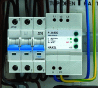 |
|
Риc.1. УЗИП класса III P-3k400 в монолитном корпусе для крепления на DIN-рейку 35 мм установленное в РЩ. |
Устройства защиты от импульсных перенапряжений класса III, согласно ГОСТ Р 51992-2002 (МЭК 61643-1-98), предназначены для защиты конечных потребителей от остаточных бросков импульсных перенапряжений связанных с внешними воздействиями и перенапряжений возникающих в низковольтной распределительной сети объекта.
Устанавливаются после УЗИП класса II в пределах 2-3 зон молниезащиты (в соответствии с МЭК 1312-1, МЭК 62305 и CO-153-34.21.122-2003) непосредственно вблизи защищаемого оборудования.
УЗИП класса III применяются в составе многоступеньчатой системы защиты электрооборудования от импульсных перенапряжений в случае если стойкость изоляции защищаемого оборудования ниже уровня напряжения защиты обеспечиваемого УЗИП класса II или расстояние по кабелю между УЗИП класса II и защищаемым оборудованием более 10-15 м. Размещать защищаемое оборудование от УЗИП класса III рекомендуется на расстоянии не более 10-15 м. При соблюдении этого правила амплитуда перенапряжения на защищаемом оборудовании не будет превышать 900 В.
|
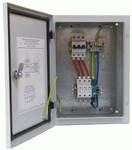 |
|
Риc.2. УЗИП класса III PM-3k230 в корпусе для крепления на DIN-рейку 35 мм состоящем из сменных модулей и базы установленное в ЩЗИП®. |
Для определения способности выдерживать токовые нагрузки УЗИП класса III испытываются комбинированной волной создаваемой генератором, который подает в разомкнутую цепь импульс напряжения 1,2/50 мкс и в короткозамкнутую цепь — импульс тока 8/20 мкс.
Основными техническими характеристиками УЗИП класса III являются:
· род тока ( переменный, постоянный);
· максимальное длительное рабочее напряжение Uc;
· испытательный импульс Uoc (1,2/50) ;
· номинальный разрядный ток In(8/20);
· значение уровня напряжения защиты Up при воздействии испытательного импульса Uoc;
· максимальные рекомендованные параметры защиты от сверхтока.
УЗИП класса III выпускаются в однофазном и трехфазном исполнении, в корпусах для крепления на DIN-рейку 35 мм, для установки в кабель канал или распределительную коробку, в виде адаптеров или удлинителей. Корпус УЗИП для крепления на DIN-рейку 35 мм может быть монолитным или состоящим из сменных модулей и базы.
|
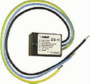 |
|
Риc.3. УЗИП класса III ZS-1I в корпусе для установки в кабель канал или распределительную коробку. |
Для производства УЗИП класса III используются оксидно-цинковые варисторы и газонаполненные разрядники. Для предотвращения аварийных ситуаций связанных с перегревом варисторов в УЗИП устанавливаются терморасцепители, которые разрывают электрическую цепь внутри УЗИП, в случае нагрева варистора до температуры 120 ºС. В случае срабатывания терморасцепителя УЗИП подлежит замене.
УЗИП класса III имеют визуальную (звуковую) или визуальную и дистанционную сигнализацию рабочего состояния. В наименовании УЗИП с визуальной и дистанционной сигнализацией рабочего состояния присутствует индекс DS, например P-3k230 DS.
Визуальный контроль рабочего состояния УЗИП класса III проводится с помощью индикаторов красного цвета которые в исправном состоянии утоплены а в случае аварии выдвинуты или с помощью светодиодов зеленого цвета, которые светятся в исправном состоянии.
Дистанционный контроль рабочего состояния УЗИП проводится с помощью «сухих» контактов дистанционной сигнализации. «Сухие» контакты способны коммутировать сеть напряжением 230 В и силой тока до 3 А.
Для производства УЗИП класса III применяются две разновидности схемы включения нелинейных элементов предназначенной для защиты электрооборудования от противофазных (поперечных) перенапряжений в цепи провод-провод:
|
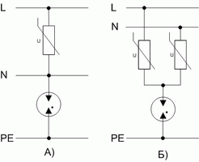 |
|
Риc.4. Схемы включения УЗИП класса III в низковольтную распределительную сеть. |
А) Варистор подключаются между фазой и нейтралью, газонаполненный разрядник между нейтралью и землей. Схема обеспечивает уровень напряжения защиты в цепях L/N, L/PE <1000 В, но при подключении в случае нарушения полярности УЗИП может выйти из строя.
Б) Фазный и нулевой проводник через варисторы соединяются в средней точке, которая в свою очередь через газонаполненный разрядник соединяется с землей. УЗИП не зависят от размещения нулевого и фазного проводников, но уровень напряжения защиты в этом случае в цепях L/PE, N/PE <1200 В. Данная схема применяется при производстве УЗИП класса III в виде сетевых адаптеров и удлинителей или в УЗИП для сетей с системой заземления типа IT.
В таблице 1 представлены типовые схемы подключений УЗИП класса III для сетей с различными типами систем заземления.
Таблица 1. Схемы подключения УЗИП класса II для сетей с различными типами систем заземления.
|
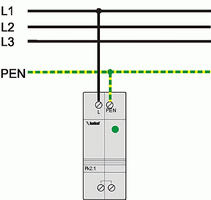
|
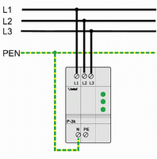 |
|
А) Подключение УЗИП класса III серии Pk2.1 (DS) в однофазную электрическую сеть с системой заземления типа TN-C. |
Б) Подключение УЗИП класса III серии P-3k (DS) в трехфазную электрическую сеть с системой заземления типа TN-C. |
|
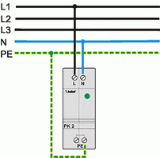
|
|
|
В) Подключение УЗИП класса III серии Pk2 (DS) в однофазную электрическую сеть с системой заземления типа TN-S. |
Г) Подключение УЗИП класса III серии P-3k (DS) в трехфазную электрическую сеть с системой заземления типа TN-S. |
|
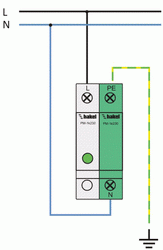 |
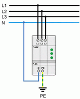 |
|
Д) Подключение УЗИП класса III серии PM-1k (DS) в однофазную электрическую сеть с системой заземления типа TT. |
Е) Подключение УЗИП класса III серии P-3k (DS) в трехфазную электрическую сеть с системой заземления типа TT. |
|
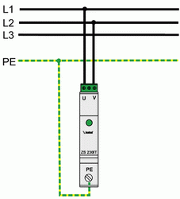 |
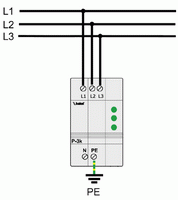 |
|
Ж) Подключение УЗИП класса III ZS1-230IT в однофазную электрическую сеть с системой заземления типа IT. |
З) Подключение УЗИП класса III серии P-3k (DS) в трехфазную электрическую сеть с системой заземления типа IT. |
Для защиты УЗИП от тока короткого замыкания, который УЗИП не в состоянии отключить самостоятельно, последствий его воздействия на электроустановку и обеспечения непрерывности подачи электропитания, последовательно с УЗИП включаются дополнительные защитные устройства от короткого замыкания – предохранители или автоматы. Для определения необходимости установки дополнительного защитного устройства следует сравнить номинальный ток защитного устройства установленного перед УЗИП IF1 с номинальным током дополнительного защитного устройства рекомендуемого производителем IF2. Компания Hakel для защиты УЗИП класса III рекомендует применять предохранители с номинальным током 16 А.
|
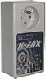 |
|
Риc.5. УЗИП класса III H-FAX в виде сетевого адаптера. |
· IF1≥ IF2 – устанавливается дополнительный предохранитель,
· IF1≤ IF2 – без дополнительного предохранителя.
В случае отсутствия места в существующих распределительных щитах возможен монтаж УЗИП класса III в дополнительные распределительные щитки, устанавливаемые рядом с основными. Такие щитки под торговой маркой ЩЗИП® выпускает ЗАО «Хакель Рос». Каждый ЩЗИП® изготавливается по индивидуальному проекту, учитывающему все особенности объекта. Для выбора и заказа ЩЗИП® необходимо заполнить опросный лист, размещенный на сайте www.hakel.ru в разделе Информация, и переслать в технический одел ЗАО «Хакель Рос».
При наличии в сети устройства защитного отключения (УЗО) УЗИП класса II подключаются до УЗО по ходу энергии, а УЗИП класса III - после. В электрических сетях где совместно применяются УЗИП и УЗО рекомендуется использовать УЗО с временной задержкой срабатывания типа «S» (селективные).
При подключении проводников к УЗИП необходимо избегать образования петель из-за воздействия электродинамических сил в момент прохождения импульсных токов, совместной прокладки защищенного и незащищенного участков проводника, защищенного и заземляющего проводников. Размещение УЗИП должно быть выполнено таким образом, чтобы расстояния между точкой подключения, УЗИП и землей были минимальными, а соединительные проводники между ними проложены кратчайшим путем, так как из-за паразитной индуктивности на соединительных проводниках в момент прохождения импульсного тока возникает падение напряжения, которое в свою очередь прикладывается к нагрузке.
Для уменьшения уровня напряжения прикладываемого к нагрузке рекомендуется использовать соединительные проводники длиной не более 0,5 м. а также применять схему подключения типа «V»- соединение, при котором УЗИП «последовательно» включается с нагрузкой.
При измерениях, производимых на электроустановке, когда методикой измерений предусматриваются испытания высокими напряжениями (например, проверка сопротивления изоляции) необходимо отключать УЗИП класса III от электроустановки. Несоблюдение этого правила приведет к искажению результатов измерения или в худшем случае к выходу из строя УЗИП.
Литература:
1. ГОСТ Р 51992-2002 (МЭК 61643-1-98) «Устройства для защиты от импульсных перенапряжений в низковольтных силовых распределительных системах. Часть 1. Требования к работоспособности и методы испытаний»;
4. СО–153-34.21.122-2003 «Инструкция по устройству молниезащиты зданий, сооружений и промышленных коммуникаций»;
5. ГОСТ Р 50571.19-2000 «Электроустановки зданий. Часть 4. Требования по обеспечению безопасности. Глава 44. Защита от перенапряжений. Раздел 443. Защита электроустановок от грозовых и коммутационных перенапряжений»;
6.ГОСТ Р 50571.26-2002 (МЭК 60364-5-534-97) «Электроустановки зданий. Часть 5. Выбор и монтаж электрооборудования. Раздел 534. Устройства для защиты от импульсных перенапряжений».
7. ГОСТ Р 50571.18-2002 (МЭК 60364-4-442-93) «Электроустановки зданий. Часть 4. Требования по обеспечению безопасности. Глава 44. Защита от перенапряжений. Раздел 442. Защита электроустановок до 1 кВ от перенапряжений вызванных замыканиями на землю в электроустановках выше 1 кВ».
8. ПУЭ (7-е изд.);
9.Технические материалы компании Hakel.